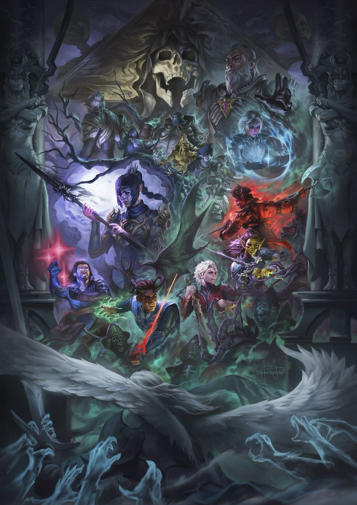

Історія Твого Виживання
Події розгортаються у легендарному світі Забутих Королівств. Головний герой опиняється на борту наутилоїда — летючого корабля зловісних іллітідів (ловців розуму). Ці істоти інфікують вас паразитом, який повільно перетворює вас на одного з них.

Але щось пішло не так: паразит не вбиває вас, а дарує дивовижні та лякаючі здібності. Тепер ваш загін — це група людей, об'єднаних однією метою: знайти спосіб позбутися паразита або використати його силу, щоб завоювати світ.
Твій шлях — твоя доля:
Кожне ваше рішення, кожне слово може змінити хід історії. Виберіть шлях героя, який врятує світ, або станьте його тираном. Хто ви: жертва Абсолют чи майстер власної долі?